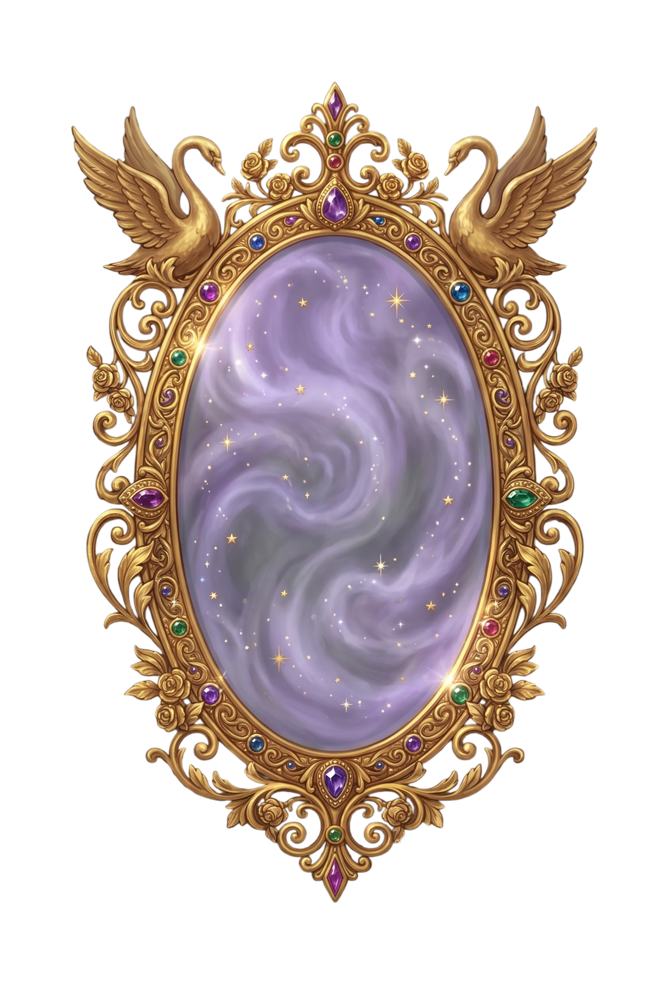

I have been waiting for thee...
Look into me, and let us discover who thou truly art.
Begin the Mirror's Test
◂ Back
Continue
Continue ✦
I am considering...
✦ The Mirror's Records ✦
Export Data
Back to Quiz